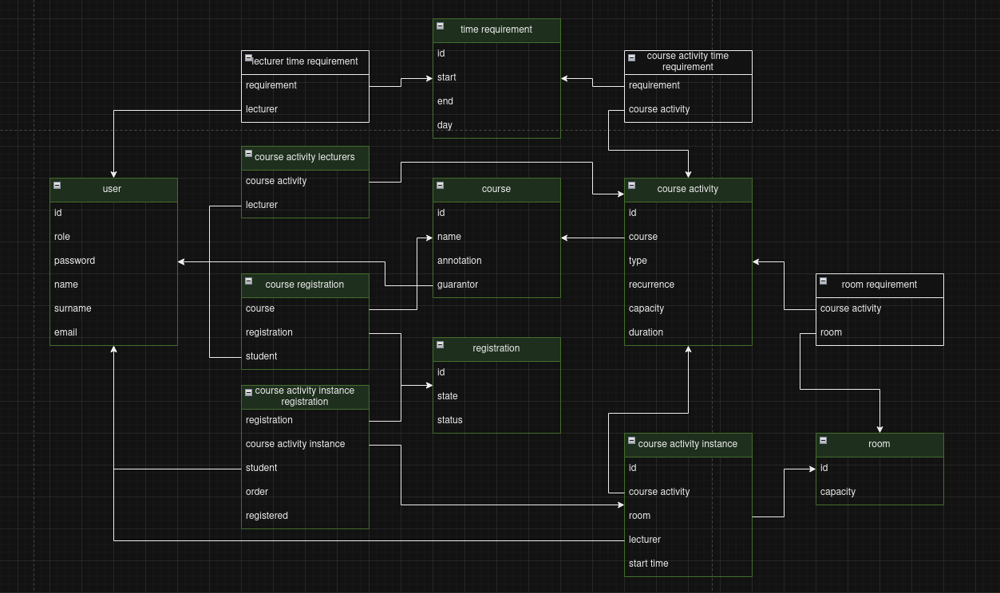

Plánování rozvrhů
- Autoři
- Jan Kapsa
xkapsa00@stud.fit.vutbr.cz -
popis činnosti v týmu
- Tomáš Vlach
xvlach24@stud.fit.vutbr.cz -
popis činnosti v týmu
- Petr Teichgráb
xteich01@stud.fit.vutbr.cz -
popis činnosti v týmu
- URL aplikace
- https://registration-website-7zsy.onrender.com/
- Kvůli limitacím serveru bude první přihlášení chvíli trvat, ale pak již chod stránky nebude omezován
Uživatelé systému pro testování
| Login | Heslo | Role |
|---|
| admin | admin | Administrátor |
| garant | garant | Garant |
| vyucujici | vyucujici | Vyučující |
| student | student | Student |
Jakékoliv nové účty v systému budou mít výchozí heslo: "heslo"
Video
Přiložte odkaz na komentované video demostrující použití informačního systému. Zaměřte se na případy užití definované zadáním (např. registrace uživatele, správa uživatelů a činnosti jednotlivých rolí). Video nahrajte například na VUT Google Drive, kde ho bude možné přímo spustit z odkazu.
Implementace
Stručná dokumentace k implementaci, která popisuje, které části projektu (např. PHP skripty) implementují jednotlivé případy použití.
Databáze

Instalace
Rozbalení
- Rozbalit archiv v novém adresáři pomocí aplikace schopné rozbalovat .zip
Client:
- Otevřete adresář 'client/'
- Vytvoříte souber s názvem '.env'
- Do tohoto souboru vložte položky
"
VITE_SERVER_HOST = "{server adress}"""
- Otevřete si příkazovou řádku v daném adrešáři
- Použijte příkaz "
npm install" pro instalaci potřebných node modulů
- Pro spuštění webové stránky v módu development použijte příkaz "
npm run dev"
- Pro postavení statické webové stránky použijte příkaz "
npm run build"
Server:
- Otevřete adresář 'server/'
- Vytvoříte souber s názvem '.env'
- Do tohoto souboru vložte položky "
ACCESS_TOKEN_SECRET={jwt secret}
CORS_ALLOW = "*"
PG_USER={postgresql user}
PG_PASSWORD={postgresql user password}
PG_HOST={postgresql hosting}
PG_DATABASE={database name}
PG_PORT={database port}
PORT=3000
"
- Pro spuštění serveru v módu development použijte příkaz "
npm run dev"
- Pro spuštění serveru použijte příkaz "
npm start"
- Pro postavení serveru pro deployment použijte příkaz "
yarn"
Databáze:
- Nainstalujte server a zapněte postgresql server (min v. 15)
- Vytvořte uživatele pro přístup k databázi
- Vytvořte databázi
- Přesuňte se v příkazové řádce do adřesáře 'database/'
- Použijte příkaz "
psql -H {server hostname} -U {created user} -D {created database} -F table.sql"
- Pokud vše prošlo bez problému měl by terminál vypsat všechny vytvořené tabulky
- Údáje databáze, uživatele a hosta vložte do .env souboru v adřesáři 'server/'
Známé problémy
Zde popište, které body zadání nejsou implementovány a z jakého důvodu. Např. „Z časových důvodů nebyla implementována správa uživatelů.” Pomůžete tím zrychlit hodnocení, když neimplementované funkce nebudeme muset dlouze hledat.